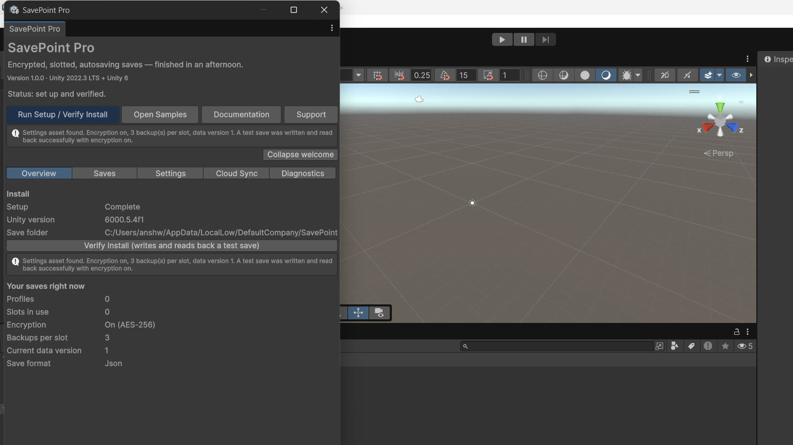
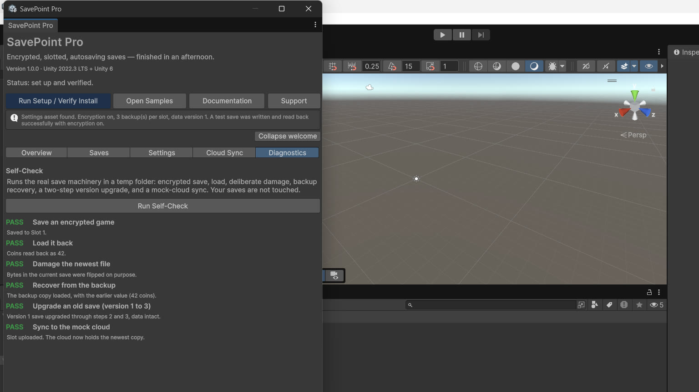
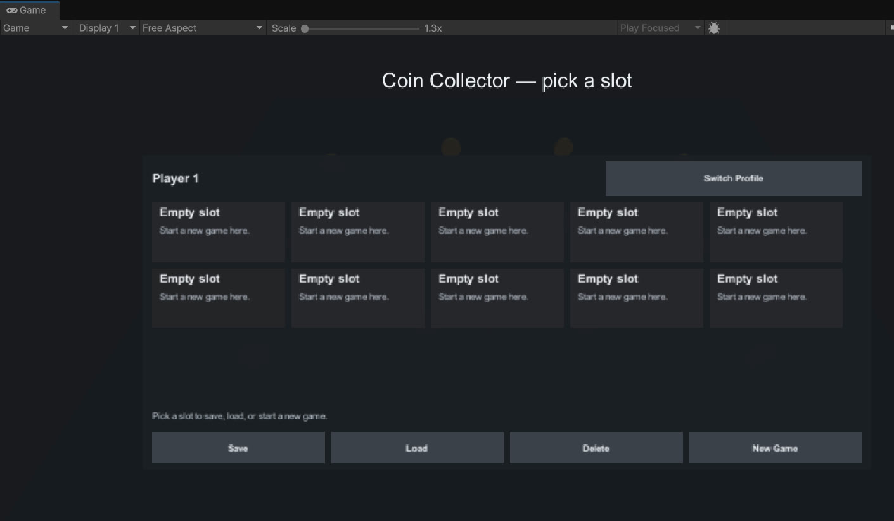
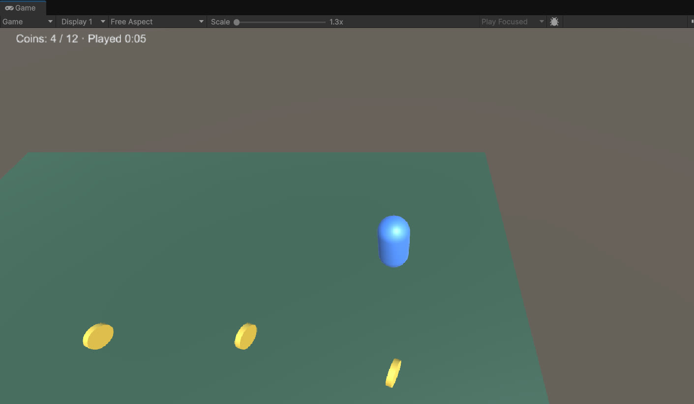

SavePoint Pro — Documentation
SavePoint Pro is a complete save system for Unity games: encrypted, slotted, autosaving saves that survive bad shutdowns and game updates. Your game talks to a single static class, SavePoint. Data lives in a SaveData; slots and profiles organize it; encryption, backups, migration and autosave happen behind that one door.

Pages
- Quick start — install, set up, and your first restored save in about five minutes.
- Core concepts — SaveData, envelopes, profiles and slots, the storage seam.
- Saving from your game — the everyday API, results instead of exceptions, autosave and checkpoints.
- Encryption — how AES-256 is applied, the developer key, and what a wrong key does.
- Backup and recovery — atomic writes, backup rotation, and the recovery walk.
- Versioned migration — upgrading old saves instead of breaking them.
- The editor window — setup, overview, saves browser, diagnostics self-check.
- Cloud sync interface — the four-method provider interface, the local mock, conflict rules.
- The Coin Collector sample — the shipped demo and what it proves.
- What version 1 is not — the honest limits list, plus support.
Gallery




Requirements
Unity 2022.3 LTS or Unity 6. One Unity package dependency: uGUI 1.0.0. No third-party dependencies.